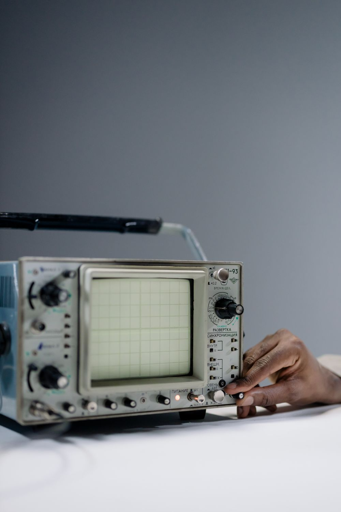

The floor did it
A new displacement interferometer, installed for stage calibration, was “drifting 40 nm every afternoon”. The client had a replacement unit on order and wanted the fault confirmed before the supplier call.
Logged their instrument against a reference interferometer for 72 continuous hours, with floor accelerometers alongside. The drift arrived on a spectral line at 11 Hz — a building mode — and grew each afternoon with the HVAC cycle and the goods lift. The instrument, measured at night, was inside its specification.
The deliverable was not an instrument. It was an isolation specification and a relocation of the calibration station within the same hall. Afternoon drift after the move: under 3 nm. The replacement order was cancelled; the supplier call was never made.

The term stayed in
Certify a 300 mm reference flat for a space subcontract, where the certificate — not the optic — was the deliverable the prime contractor would judge.
Measured on the isolated slab across two night sessions, and wrote the full uncertainty budget: reference-flat term, repeatability, thermal soak, air turbulence, the lot. Midway, the client asked for the reference-flat term to come out — it was the largest line and it made the headline number worse. It stayed in. A budget with its largest term removed is not a smaller budget; it is a false one.
Certified at λ/22 ± λ/35 (k = 2), term included. The prime’s reviewer accepted the certificate at first pass and complimented the budget by name — the testimonial on the log page is his quality manager’s.
The cheaper sensor
Fourteen production machines to be monitored for imbalance, and a request — written by a brochure, I suspect — for interferometric monitoring on all fourteen.
Stated the requirement first, in the client’s own units: detect the imbalance signature above a printed threshold, at a printed false-alarm rate. Then ran both technologies in parallel on three machines for three weeks, and published the comparison to the client with the raw spectra attached.
Industrial accelerometers met the stated requirement on 12 of the 14 machines, at a ninth of the cost. Interferometers went where they were genuinely needed — the two test stands. I supplied the two, specified the twelve, and the comparison table is the client’s to keep. A practice that only sells the expensive answer will eventually sell it to someone who checks.